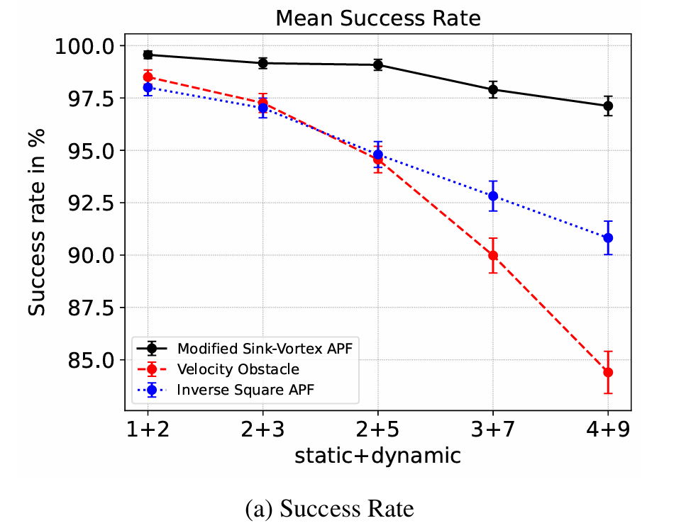
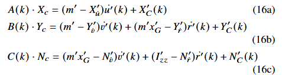
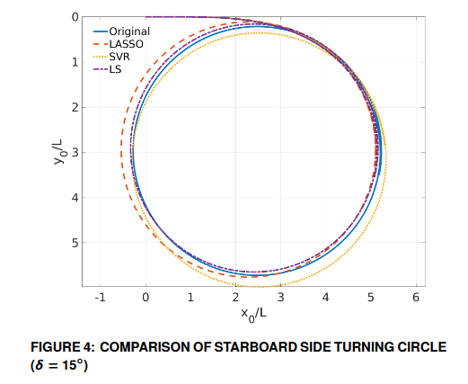

Publications
Last Updated: March 2025Aditya Kailas Jadhav, Anantha Raj Pandi, Abhilash Somayajula, “Collision Avoidance for Autonomous Surface Vessels Using Novel Artificial Potential Fields,” Ocean Engineering, Vol. 288, Part 2, 2023, 116011. Pergamon.
Abstract
As the demand for transportation through waterways continues to rise, the number of vessels plying the waters has correspondingly increased. This has resulted in a greater number of accidents and collisions between ships, some of which lead to significant loss of life and financial losses. Research has shown that human error is a major factor responsible for such incidents. The maritime industry is constantly exploring newer approaches to autonomy to mitigate this issue. This study presents the use of novel Artificial Potential Fields (APFs) to perform obstacle and collision avoidance in marine environments. This study highlights the advantage of harmonic functions over traditional functions in modeling potential fields. With a modification, the method is extended to effectively avoid dynamic obstacles while adhering to COLREGs. Improved performance is observed as compared to the traditional potential fields and also against the popular velocity obstacle approach. A comprehensive statistical analysis is also performed through Monte Carlo simulations in different congested environments that emulate real traffic conditions to demonstrate robustness of the approach.

V. V. Deogaonkar, A. K. Jadhav, K. Ramachandran, and A. S. Somayajula, “Data Driven Identification of Ship Maneuvering Coefficients,” Proceedings of the ASME 2023 42nd International Conference on Ocean, Offshore and Arctic Engineering (OMAE2023), Volume 5: Ocean Engineering, V005T06A050, Melbourne, Australia.
Abstract
Maneuvering models of a ship are quite complex and require accurate knowledge of the various hydrodynamic derivatives and coefficients to model the maneuvering trajectories undertaken by a ship accurately. Discerning these coefficients through practical tests in specialized facilities is expensive and time-consuming. Data-driven identification of the ship maneuvering coefficients using free-running model data is a possible alternative. In this study, the maneuvering motions of the KCS hull are simulated using the MMG model, which are then used as a starting point to identify an Abkowitz model for the vessel. The coefficients of the Abkowitz model are predicted without presuming any knowledge of the MMG model used to generate the data. Three different approaches — Least squares, LASSO optimization, and Support Vector Machines — are used to identify the hydrodynamic coefficients of the Abkowitz model. The identified coefficients are used to generate test trajectories not seen in training data and are compared with the MMG model to verify that the dynamics are accurately captured. The common issue of parameter drift occurring due to the problem being ill-posed is discussed, and sparsity-based solutions are suggested to overcome them.

